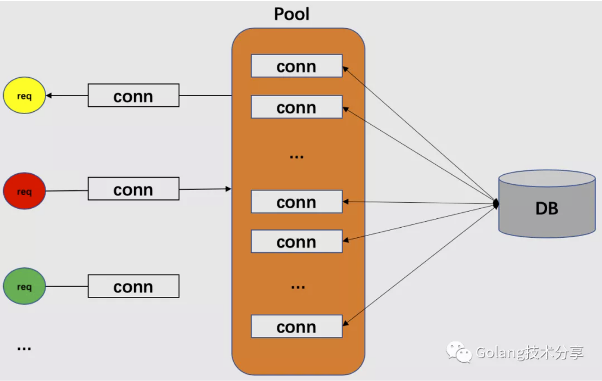

数据库连接池
池（Pool）是指某类资源的容器，它是一种用于提高程序效率和降低系统开销的技术，比如线程池、连接池、内存池、对象池。但它们的核心理念一致：资源**复用**。
本文主要探究数据库连接池的相关问题，并实现一个简单的Go版本连接池Demo，希望能对读者理解池技术有些帮助。
数据库连接池的基本思想就是为数据库连接建立一个缓冲池，预先在缓冲池中放入一定数量的数据库连接，当用户需要访问数据库时，从池中取出一条空闲连接，使用完毕后，将该连接返回到池中，以供其他的请求访问使用。

为什么需要数据库连接池？
首先，需要明确的是，数据库连接是一种有限的、昂贵的资源。如果按照单个连接来进行数据库操作，在高并发的情况下会导致数据库连接数耗尽的问题，并且单个连接的频繁创建和关闭，会极大地增加数据库的开销。例如，mysql数据库可通过以下mysql命令查看其设置的最大连接数。
1
show variables like '%max_connections%';
而数据库连接池负责分配、管理和释放数据库连接，它允许客户端请求复用现有的数据库连接，而不是重新建立一个。
核心概念
1. 连接数
连接池中应该放置多少连接，才能使系统的性能最佳？系统可通过设置最小连接数和最大连接数等参数来调整。
最小连接数
最小连接数是连接池空闲状态下维持的数据库连接数，也是系统启动时连接池所创建的连接数。创建过多，则系统启动就会较慢，且如果应用程序对数据库连接的使用量不大，会造成数据库连接资源的浪费。如果创建过少，则系统启动较快，但后续对请求的响应就会较慢。
最大连接数
最大连接数，是连接池能申请的最大连接数。超过最大连接数的请求，将加入等待队列中，当池中有可用连接时，再处理这些请求。
最小连接数的设置，可根据系统正常访问量的大小来确定一个合适的数值；而最大连接数，则可根据高峰场景下的系统访问量来设置。
2. 空闲时间
当连接请求超过最小连接数时，在超过后的连接请求需要连接池为它们建立新的连接，但是总的连接数不能超过最大连接数限制。对于这些大于最小连接数的数据库连接在使用完后不会被马上释放，它将被放在连接池中等待重复使用或者超过设定的空闲时间后被释放。
Demo实现
定义数据库连接池对象Pool
1 | type Pool struct { |
模拟数据库连接对象DBConn
1 | type DBConn struct { |
池对象方法定义
1 | // 从池中取出连接 |
（左右滑动查看完整代码图片）
考虑代码篇幅原因，本Demo并没有实现释放空闲超时的数据库连接功能，即没有对p.numConn做–计数和Pool的RemoveConn方法。实际情况中，设计连接池，还有很多因素需要考虑，例如：
- 超时移除：当池中空闲的连接数大于最小连接数时，应当对数据库连接进行空闲超时检查，当满足要求时，释放该条连接，并从池中移除。但最终在池中维持的数据库连接条数应该等于最小连接数。
- 连接可用：对池中的数据库连接建立保活机制，保证每条连接是可用的。
- 事务处理：由于事务的原子性，一组sql语句要么全做，要么全不做。如果简单采用连接复用的策略，就会发生问题，因为没有办法控制属于同一个事务的多个数据库操作方法的动作，可能这些数据库操作是在多个连接上进行的，并且这些连接可能被其他非事务方法复用。为此可以使用每一个事务独占一个连接来实现，虽然这种方法有点浪费连接池资源，但可以大大降低事务管理的复杂性。